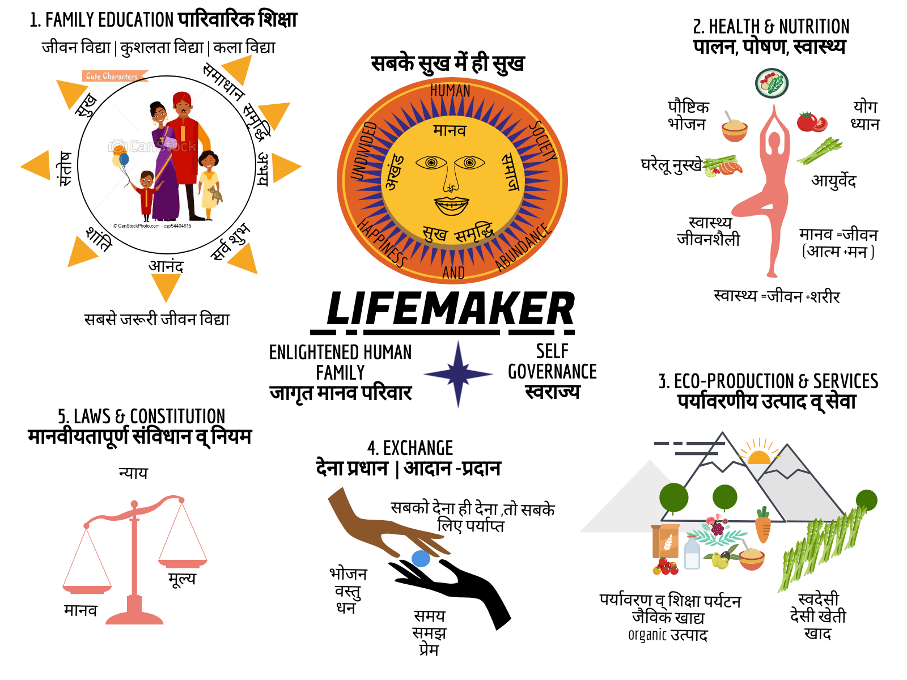

The vision and aims of Lifemaker
- To unite as humankind to understand & live with absolute, universal and permanent resolution that truly satisfies all human needs, aspirations & questions, helps realise full human potential, establishes peace, equality and universal love globally, and gives to every human coming to Earth an environment and equal opportunity to live a comfortable, free, beautiful, enriching and meaningful lifetime and to leave behind a better co-creation than what it was born into.
- To establish and maintain family based tradition of life education, for global human society to share and live by a common, holistic perspective of Life, Existence & the way to live as humans.
- To establish and upkeep a universal values based system & order covering education & research, health & relationships, ecological production & services, exchange & cooperation and justice & self governance, aimed for providing complete resolution for all human needs (material & conscious) at family, village, region, state, national and international level for present families & society and all future generations to come.
- To bring and sustain grassroots and family based reforms to live sustainably & humanely, in balance and symbiosis with nature & all life on Earth, and to protect & make good use of natural resources, environment, air, water & soil.
The working draft of the full list of aims and objectives can be found here
What’s happening 2018?
- Pilot in Village Saalig & in Dharamsala town, Himachal Pradesh under cooperative society model.
- Starting food and household items based cottage industry
- Spreading awareness about Lifemaker society through products, shops, meetups and personal interactions.
- Film education club will start in December in villages of Dharamsala, HP. Thanks to crowdfunding support by friends.
- Discussions and documentation of
- Aims, objectives and rules of the society
- Philosophy and literature
- Working model with all five dimensions of education, health, production, exchange and justice
- Universal values
- Planning camps for Life Education in Himalayas from March 29th onwards
- Content on internet, youtube and radio is on the way
- Looking for land to lease for camps, workshops & residencies
- Registering a charitable society
The five pronged working model (how to be)
Since family is the fundamental unit of co-existence, of societal organisation and of propogation of human seed, and the first and primary space for education and wellbeing of everyone, our approach is family based.
The working model covers these five points for self-governed and self-sustainable families organised as grassroots based cooperatives and self help groups to co-exist in Universal orderliness across villages, neighborhoods, provinces, nations and united-humane-nation.
- Education and research - Family education and research, covering value based consciousness development (the foundation) and skills/knowledge useful for living so that every family lives in Budhdha consciousness, serves the co-existence in meaningful ways and is self reliant. To also introduce value based consciousness development education in schools, colleges, universities and other such social mediums.
- Health - Healthy lifestyle, natural healing practices, affordable medicine and cure in every neighborhood so that every family and village is self empowered to live healthy in body & mind. Also global research, cooperation and hospitals for providing medicine and cure beyond the local scope.
- Eco-production, work and services - Self-reliant families & neighborhoods producing in abundance through organic farming, cottage industry and with least dependency on heavy machinery or factories. Universal values and local resources based production, work and services in balance and symbiosis with nature and society.
- Exchange and economics - Giving and justice based (instead of self interest & maximisation of profit based) exchange where every family sustains as a giver and reciever of abundance. Co-ownership and co-management of resources, food storage, banking, barter & exchange markets as self help groups and cooperative societies organised from village (local) to united-humane-nation (global) levels, to ensure fulfillment every family’s living needs as locally as possible along with necessary global cooperation and collaboration. To work on localised finite resource based localised economy instead of infinite resource based global consumeristic economy based on interest, inflation, profit and hoarding.
- Justice and governance - Universal values based constitution, code of conduct and laws for decentralised self-governance, collaboration and consensual decision making, as undivided human society organised from village to united-humane-nation levels. To evolve and upkeep mechanisms which ensure justful, truthful and humane social environment within participating families and to strive for the same for all humanity.

What is family?
A group of people living together with strong bond of love and mutual confidence, feel assured of care, protection & nurture, expect happiness, peace, contentment & bliss with each other, share common vision, projects and intention for lifetime (like raising children) and are resolved and committed to make it happen.
The existential purpose of every Life and especially human Life is
- To study, understand and remember the nature of Self - What am I?
- To become a master & knower of Existence - To live co-existentially with love, truthfulness, justice and perfection in work, behavior & actions
- Happiness, contentment, peace and bliss in Co-existence (self, family, relationships, work, society, other life forms)
We may have different viewpoints on nature of Self and reality, different skin color, occupations and opinions, but as humans we are all the same. Through honest objective and subjective inquiry humanity as society and each human is bound to understand and realise Truth in the same way, because Existence is absolute and universal. Our sameness as humans, the onlyness of Truth (Existence in which we co-exist), honest self inquiry for Truth, and agreement on the way to live, is the (only) unifying ground, which will provide Life the absolute and permanent resolution it needs and seeks.
Call to the tribe
Every human is seeking happiness, mostly externally. Happiness can only be found when we are in sync with own true nature, and it reflects in fulfilment of our relationships with the world and with our own Self. The individuals are like small streams, which may or may not be able to make to the ocean alone. But together, our company of Truth can form a large river, which surely will reach the ocean of realised co-existential bliss; and there will be mutual wellbeing and happiness all along the way and for all our future generations to come on Earth.
You can reach us out via the Lifeline
We are thankful
- Thanks to every human of past and present, who has contributed in their unique ways
- Thanks to all the religions, messengers, philosophers, teachers, scientists, social reformers, parents and all loving beings, for their contribution towards human evolution and upliftment. We wish to see their work to completion. We want to see Humanity reach its full potential.
- Thanks to Shri A Nagraj & Madhyastha Darshan for the educational work done by them in this direction.
- Thanks to the Universal Teacher.